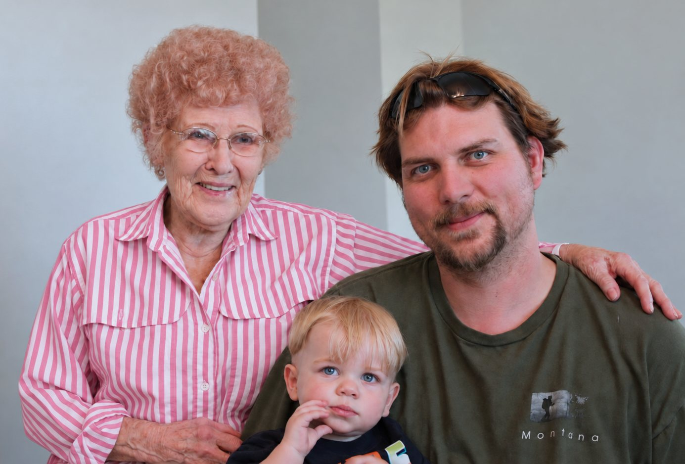
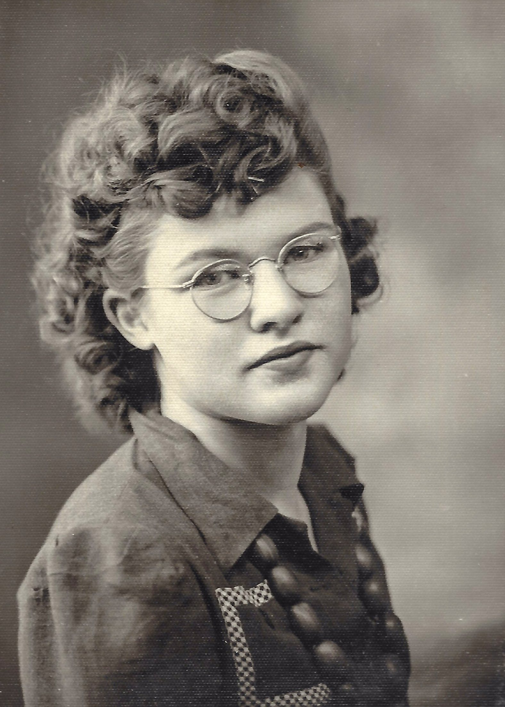

Founder
Jason Pekovitch

I’m a product leader and experienced software engineer who has spent much of my career thinking about how technology can help people navigate complicated systems. I became deeply focused on generative AI when it stopped merely producing interesting responses and started doing real work.
OpenClaw made that possibility tangible. It gave me a practical way to run meaningful intelligence on hardware I owned, connect it to useful tools, and keep the system—and the context it learned about my life—under my control.
The first thing I wanted it to do was remember.
That led me to develop Cortex, an open architecture for persistent AI memory, and ElderClaw, the open-source platform foundation beneath Livonne. They gave me a practical way to begin building the underlying system before the complete Livonne hardware platform existed.
Once I began seriously considering what a private system could remember for me, the leap to memory care was very short.

LaVonne
LaVonne was my grandmother, and we were very close. During nearly the last ten years of her life, I watched dementia steadily take away her memory, independence, and freedom even while she remained physically healthy.
It was hard on everyone around her. It was hardest on her.
Some of the stories she carried disappeared before anyone thought to preserve them. The details of her life, her voice, and pieces of our family history went with her.
She never saw this project. Livonne began long after she was gone. But once I understood what a private, always-available intelligence might be able to do, I knew exactly whom I wished it had existed for.
Livonne is named for her.
That was the beginning of Livonne Care.
Care revealed the next problem.
I followed the idea all the way through aging at home.
Livonne could help someone remain independent longer. It could provide memory support, coordinate services, reduce the burden carried by family, and make the home safer without turning it into a surveillance environment.
But when I reached the end of that journey, the life I had designed still felt lonely.
That realization was personal.
This will be my future too. If I eventually need more support, how do I want to live? I do not want to spend my final years alone in a house while technology makes the arrangement barely sustainable.
I want friends nearby. Shared meals. Places to walk. People who notice when I do not arrive for coffee—not because they were assigned to monitor me, but because I belong there.
That became Livonne Community: a retirement community that earns the name.
Then I asked why we should wait.
Once I had worked through Care and Community, another question became obvious.
Why should this kind of help begin only when someone starts losing independence?
Families need it now.
One person is often carrying the household’s calendars, rides, school forms, meals, appointments, changes, and backup plans in their head. Children need patient help that adapts to how they learn. Family members need personal assistance without giving everyone else access to their private lives.
The same foundation could help an entire household coordinate more intelligently.
That became Livonne Family.
And when I followed that idea across generations, it returned me to where the entire journey started: the stories that disappear when no one is there to preserve them.
That became Legacy.
The personal problem is becoming a national one.
My family is not unusual.
Between my wife and me, we have six older parents and stepparents whose care will increasingly touch our lives. Families everywhere are facing some version of the same future.
The largest generation is aging. Most people want to remain at home. Family caregivers are already overwhelmed. Professional care is expensive and short-staffed. Retirement-community capacity is limited. The sandwich generation is trying to raise children, maintain careers, and coordinate growing support for parents at the same time.
There is no outlet large enough to absorb what is coming.
Livonne does more than make the existing system slightly more efficient. It creates a new first layer of patient, continuous support—then connects that layer to family, community, and real-world help.
Why Care comes first
Care is the right place to begin because the need is urgent, the value is concrete, and the market is focused enough to enter responsibly.
A family already struggling to keep a parent independent can immediately understand the value of patient memory support, household guidance, safeguards, and better coordination.
Care establishes the trust model.
Community expands it into a place.
Family carries it into the broader household market.
Legacy compounds across generations.
The stories did not merely give Livonne better marketing. They revealed the product architecture and the path into the market.
Why now
This is a hardware play in the middle of an intelligence singularity.
I could build prototypes in my garage. I could assemble the local systems, connect the devices, and prove pieces of the experience.
What I cannot responsibly bootstrap alone is the complete hardware, manufacturing, deployment, support, and trust infrastructure at the speed this moment demands.
Someone will build the ambient intelligence layer for everyday life.
The real question is what kind of system it will be.
Will it stream private life into someone else’s cloud and turn household context into another corporate asset?
Or will it belong to the people whose lives it understands?
I believe it should belong to them.
That is why I am building Livonne.